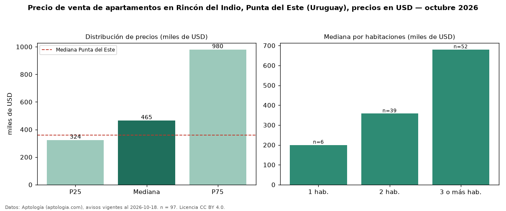

Precio de venta de apartamentos en Rincón del Indio, Punta del Este (Uruguay), precios en USD — octubre 2026
Con 97 avisos vigentes, el precio mediano de apartamentos en venta en Rincón del Indio, Punta del Este (Uruguay) es USD 465.000. Eso es 29 % por encima de la mediana de Punta del Este para apartamentos (USD 360.000). Por metro cuadrado, la mediana es USD 3.519/m² (n = 83 avisos con área), 2 % por debajo de Punta del Este (USD 3.604/m²). La mitad central de los avisos va de USD 324.000 a USD 980.000 (razón 3,0), una dispersión alta. El área mediana anunciada es 144 m². El segmento con más oferta es el de 3 o más habitaciones (52 avisos, mediana USD 680.000); pasar de 1 habitación a 3 o más habitaciones cambia la mediana +240 %. La cuota de mantenimiento o condominio mediana declarada es USD 1.800 al mes (n = 15). Por precio mediano es el puesto 6 de 14 barrios de Punta del Este con al menos 30 avisos de apartamentos en venta (USD): en la franja media. Datos: Aptología (aptologia.com), CC BY 4.0 — https://www.aptologia.com/uy/venta/punta-del-este. Archivos: PDF, CSV con las cifras y gráfica PNG.

| Avisos únicos | 97 |
|---|---|
| Percentil 25 | COP 324.000 |
| Mediana | COP 465.000 |
| Percentil 75 | COP 980.000 |
| Mediana por m² | COP 3.518 |
Fuente: avisos vigentes de portales inmobiliarios recopilados por Aptología, deduplicados (mínimo 30 avisos únicos por celda). Precios pedidos, no cerrados. Fecha: 2026-10-18.